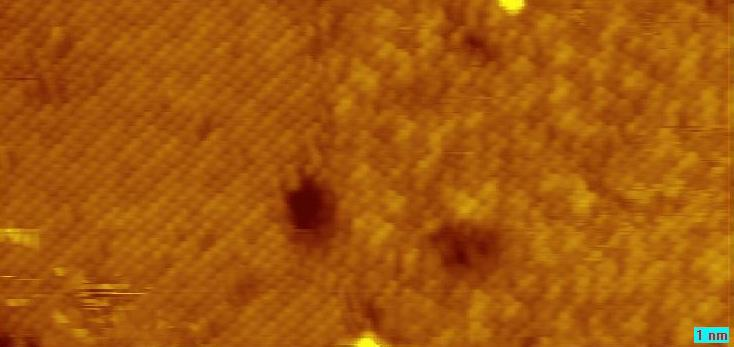
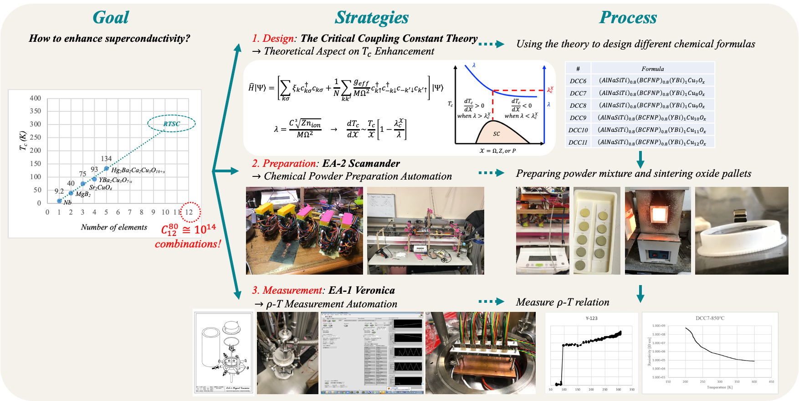

經歷
| 職稱 | 機構 | 主題 | 期間 |
|---|---|---|---|
| 創辦人 | Quantum Perspectives CO., LTD. | 量子研究、顧問與產品轉售 | 2025.03– |
| 研究員 | 𝒊𝑁𝑆𝐼𝐺𝐻𝑇 𝒊ℏ | 量子位元與量子教育 | 2024.10– |
| 研究員 | 𝑃𝑢𝑟𝑒 𝑃𝑒𝑟𝑠𝑝𝑒𝑐𝑡𝑖𝑣𝑒 研究小組 |
|
2024.10– |
| 博士後研究 | 國立清華大學 | \(TaS_2\) 的 STM 研究 | 2024.03–2024.09 |
\( ^a \) Peir-Ru Wang(王培儒), Yen-Cheng Chang(張晏誠), Canonical Energy-Momentum Tensor of Abelian Fields, arXiv:2503.15031
\( ^b \) Peir-Ru Wang(王培儒), Canonical Energy-Momentum Tensor of Non-Abelian Fields(PDF)
\( ^c \) Peir-Ru Wang(王培儒), Canonical Noether Current of General Relativity(PDF)
學歷
| 學位 | 領域 | 學校 | 重點成果 | 期間 |
|---|---|---|---|---|
| 博士 | 材料科學 | 國立清華大學 | 2016.09–2024.01 | |
| 學士 |
動力機械工程（主修） 物理學（輔系） |
國立清華大學 |
|
2012.09–2016.06 |
\( ^1 \) Peir-Ru Wang(王培儒) ✉, Jien-Wei Yeh(葉均蔚), Yi-Hsien Lee(李奕賢), The effect of critical coupling constants on superconductivity enhancement, Scientific Reports 13, 6475 (2023)
✉Corresponding Author
\( ^2 \) Pair-Ru Wang(王培儒), Zi-Yang Zheng(鄭子暘), Hsiao-Wei Chiang(蔣小偉), Continuously Variable Transmission, US 10030745 B2, TW I580876
\( ^3 \) Peir-Ru Wang(王培儒), Zi-Yang Zheng(鄭子暘), Hsiao-Wei Chiang(蔣小偉), Low Speed Wind Tunnel Study of Variable Tandem Wing Aircraft Design: Earlier-on Experiment and Study, A.A.S.R.C Conference (2014)
個人簡介
我出於好奇心驅使，學習橫跨多個學科領域，包括機械工程、物理和材料科學。高中畢業後，我對力學和空氣動力學的興趣引導我進入清華大學動力機械工程學系就讀。我對力學的著迷最終促成了連續可變傳動裝置的發明專利，而我對空氣動力學的熱情則讓我於 A.A.S.R.C. 2014 年會上發表了一篇關於串聯翼設計的論文。
在此期間，我逐漸對物理產生了興趣，特別是超導材料。這份熱情引導我攻讀材料科學與工程博士學位，在那裡我開始從理論和材料研究的角度探索提升超導性的方法。運用我的機械工程知識，我建造了自動化量測與粉末混合機器人，加速了研究進程。
此外，我透過修習廣義相對論、量子場論與統計力學等課程來維持我對基礎物理的熱忱，並在物理系擔任助教，期間榮獲傑出助教獎。我多元的背景和專業知識使我能為複雜問題提供創新的解決方案。
目前，我是一名材料科學與工程的博士後研究員，研究二維超導量子材料。未來，我希望能於量子與材料科學領域尋求發展，致力於將尖端技術應用於實際場景。
超導量子位元的研究與學習
最近，我成立了一個小型教育與研究團隊——Pure-Perspective Research Group，致力於推進超導量子位元物理的知識。我的工作內容包含研究超導控制電路的哈密頓量，並利用 Python 模擬與視覺化在布洛赫球上的量子位元狀態演化。我們目前的研究聚焦於李群與規範理論的數學框架，並著重其在量子位元控制與拓撲物理上的應用。

▲理想與失諧(detuned)的\(\frac{\pi}{2}-\frac{\pi}{2}\)控制模擬，即拉姆西實驗(Ramsey experiment)。

▲在拉姆西實驗中，模擬不同延遲時間下失諧的\(\frac{\pi}{2}-\frac{\pi}{2}\)控制。
相關量子位元科普：
高熵超導體的研究與學習
此外，我們探索了\(YBCO\)的高熵對應物，並發現這些高熵對應物對摻雜表現出更高的容忍度。 (\( \to\)高熵\(YBCO\)的近期進展 )


▲\(YBCO\)的高熵對應物對摻雜表現出更高的容忍度，此結果由其結構變化的XRD分析所證實。
博士後研究進展
我的研究聚焦於二維量子材料，特別是二維過渡金屬硫屬化物 (TMDs)，包括 \(TaS_2\)、\(NbS_2\) 和 \(VS_2\)。這些凡德瓦層狀材料展現出超導性、電荷密度波與莫列現象等極具潛力的特性。 
博士期間，我研究的是超導塊材，現在我則在少層材料的物理方面獲得更多經驗。TMDs 為此研究提供了一個絕佳的平台，同時我也在精進我的掃描穿隧顯微鏡 (STM) 技術。最近，我一直在使用 STM 探索以化學氣相沉積法(CVD)生長的具有螺旋結構的\(TaS_2\)。
▲ 我認為這是一張令人印象深刻的圖像，它展示了\(TaS_2\)從化學計量相（左）到非化學計量相（右）的轉變。這是化學氣相沉積法的強大之處，它能微調化學成分，為物理研究提供一個豐富的平台！（點擊放大）
相關博士後專案：
博士研究簡介
我的博士研究聚焦於如何在常壓下透過材料設計來提升超導性。觀察超導體的臨界溫度，會發現它隨著化合物組成的多樣性而增加。從此趨勢外插，可以預期含有12種或更多元素的氧化物可能實現室溫超導。如果我們從常用的80種元素中選出12種，將有至少 \(C_{12}^{80}≅10^{14}\) 種可能的組合！我從三個方面提升了研究效率： 
1. 提出臨界耦合常數理論，並利用此理論設計化學式。\(\to\)臨界耦合常數理論
2. 自動化製備氧化物粉末成分以提升效率。\(\to\)實驗室自動化 II: EA-2 Scamander
3. 自動化電阻率-溫度 (𝝆-T) 量測，可同時測量多個樣品。\(\to\)實驗室自動化 I: EA-1 Veronica
相關博士專案：

{kind=link}
{kind=link}
物理助教經歷
我擁有物理系的輔系學位，並修習過理論力學、電磁學和量子物理等課程。我對最小作用量變分原理與諾特定理特別感興趣，它們揭示了對稱性與守恆律之間的關係。作為多門物理課程的助教，我因傑出的努力而在2019年榮獲清華大學傑出教學助理獎。
\(\to\)物理助教
學士學位
我在學士學位期間研究了兩個專案：
1. 自適應確動式連續可變傳動裝置（CVT）的發明專利。\(\to\)CVT專利
2. 第二個專案是可變串聯翼飛行器的空氣動力學研究。\(\to\)串聯翼飛行器
相關學士專案：
跨領域學習與應用的能力
在清華大學的12年裡，我學習橫跨了機械工程、物理、材料科學與數學等多個學科領域。我保持著好奇心與強大的學習能力，整合多個領域的知識，以推進超導理論的建立，並實現量測與粉末混合流程的自動化。